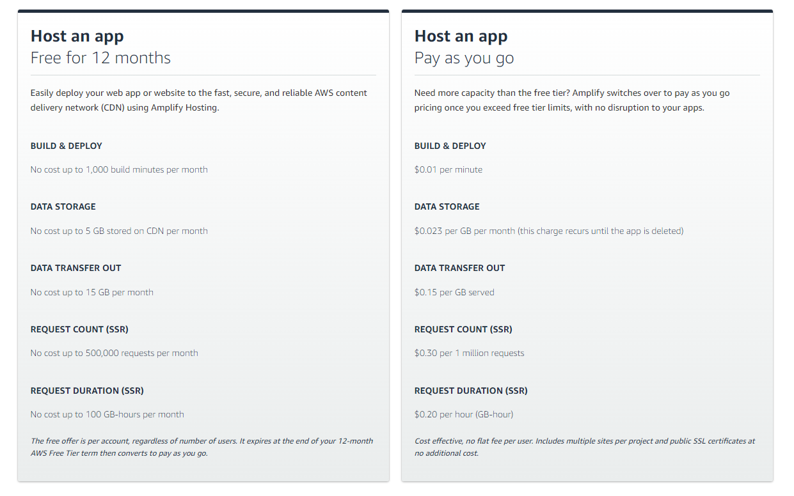
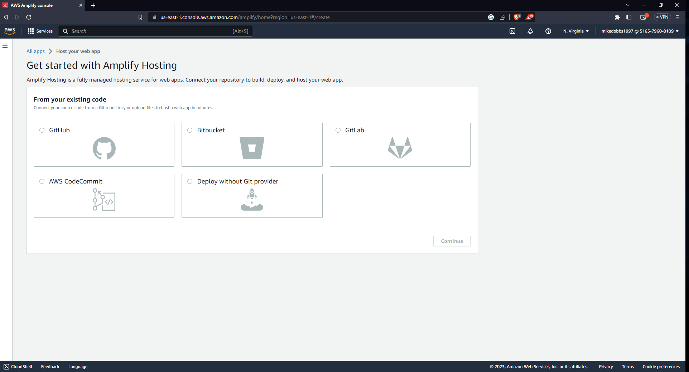
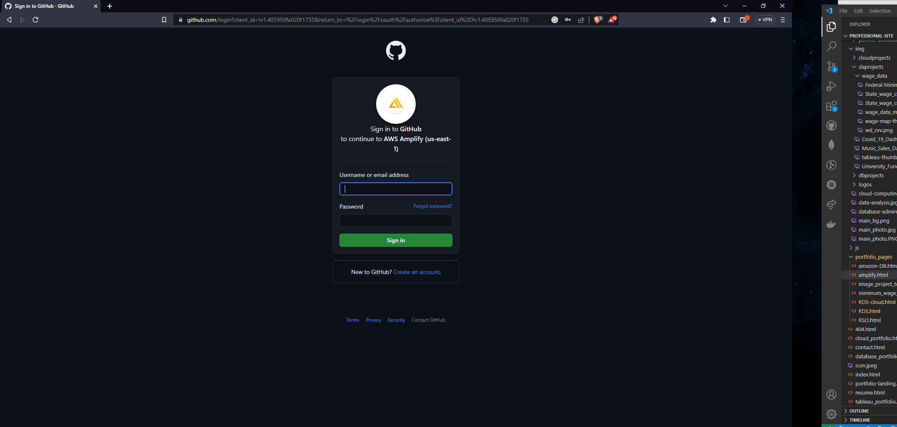
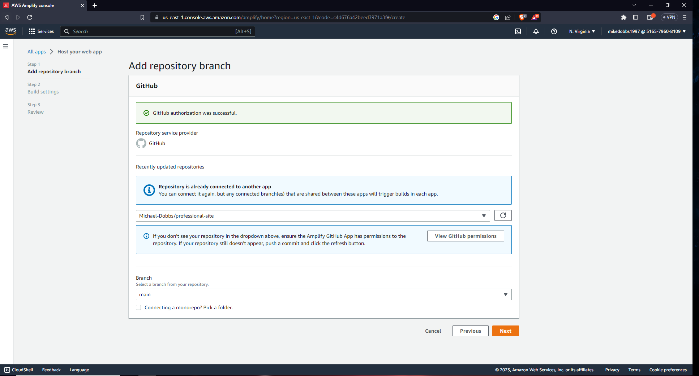
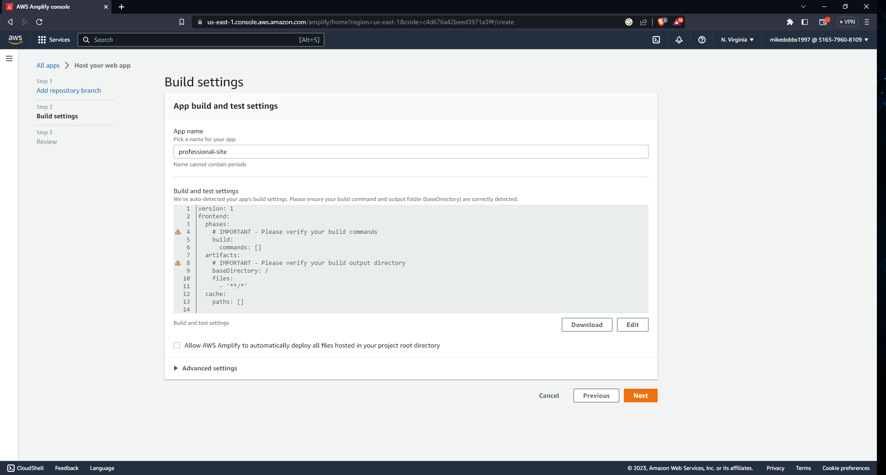
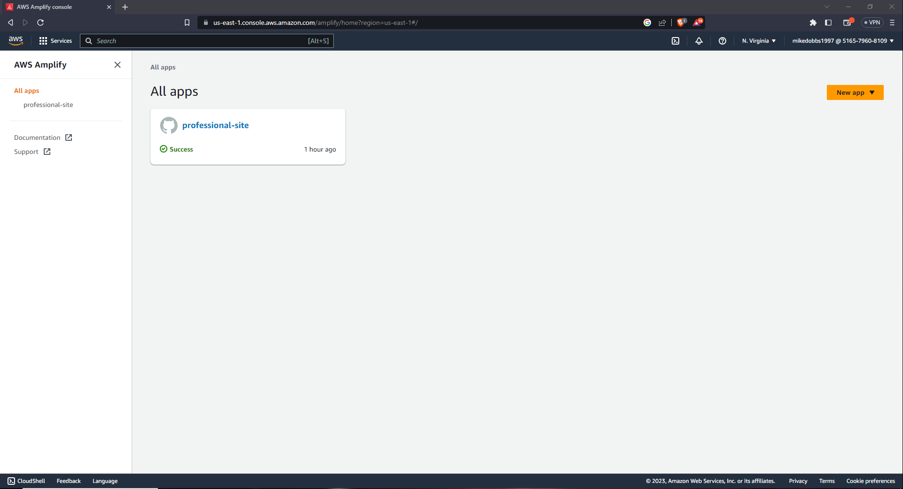
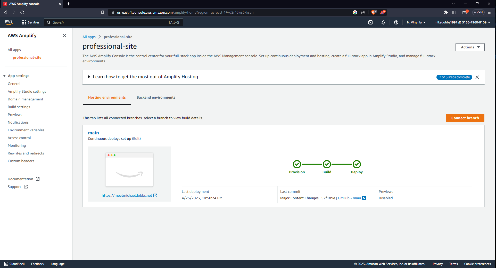
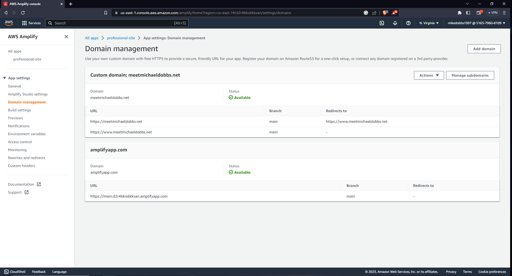
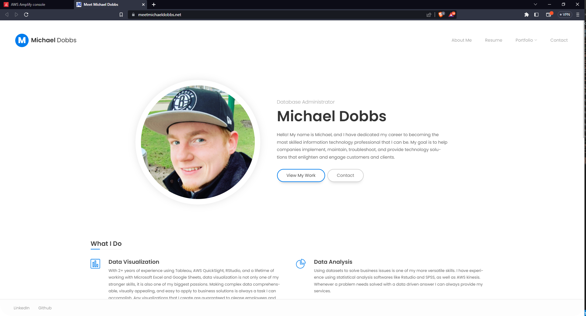

Making A Static Website With AWS Amplify and Route 53
What is AWS Amplify and Route 53?
Amplify is a cloud service from AWS that lets frontend web and mobile developers easily build, ship, and host full-stack applications on AWS, with the flexibility to leverage the breadth of AWS services as use cases evolve. No cloud expertise is needed to utilize AMplify, just unit tested code retrieved from a version control or pipeline source.
Route 53 on the other hand is a highly available and scalable Domain Name System (DNS) web service. It helps connects user requests to internet applications (with URL address resolution) running on AWS or on-premises.
So basically people can build websites and web applications very quickly and easily with Amplify, and then use Route 53 to connect highly available and secure domains and web addressing to them. The following demonstration will explain the pricing of these products and then discuss how I used these services to create this website!
What are the prices of Amplify and Route 53?
Below shows some examples of what you would expect to pay in order to host an application with Amplify. Its actually suprisingly cheap overall and has some great free tier options for the first 12 months of development and deployment. Route 53 pricing can be either very simply or complex depending on the hardware the domains are hworking with. For this simple use case its just a standard domain registration charge of $13 for a year contract to own the site URL (meetmichaeldobbs.net), and then I pay $0.50 for every extra hosted zone that makes the site have greater resolution speed and availability.

Creating a new Amplify application and connecting a source repository
Once you arrive at the Amplify page you can select to create a new application from the dashboard. You will then be asked how you wish to have the code deployed, in my case I wish you it to be built off code from my Github repository. Selecting source control will then prompt you to connect to a Git repository in order to pull the applications source code for building and deploying the app.

Signing in and verifying that AWS can interact with a repository
Once you have selected your source you will have to sign into that platform and give AWS Amplify permission to do pull requests on the latest commits to that repository. Proper configuration of these permissions is an important part of how Amplify will be able to make the application work, so even though this step is easy it is also very important.

Adding a development repository branch
Once a connection to a repository has been successfully autorized, you can now select a development branch from within the repository that Amplify will build the application from (i.e. main, production, development, etc.). It also promts you to check the permissions again because as I stated previously, it will not build properly without them.

Applying any build settings for container configuration
Here you can give the application a name and view, download, or edit the automated build settings for the application. My application is quite simple so I do not need to make any changes here or in the advanced settings for builds, but the larger and more complex the application is the more configuration you may want or need. Once you are done with these settings, you can review and create the application and return to the applications page.

Viewing and accessing the new application from the dashboard
On this page we can navigate through each of our created apps and manage them individually. Since we only have one application now we can simply click to view its details. If we wanted to however we could deploy or connect more applications from this screen as well.

Checking hosting environments and deployment information
Now we are viewing all of the information for our running application. Notice in the hosting environments tab we can see that I have linked the application to my own domain (I will demonstrate this next). We can also view important information about the last build and deployment to make sure that everything is updating correctly when we make any changes. If I do change the source code in the repository with any commits, Amplify will immediately pull the new code, build it, and deploy it while never taking the application offline. The whole process only takes my application about 30-60 seconds, but for larger applications it might takes minutes.

Managing and connecting registered domains for the application
In order to connect and manage any domains that route to your application (such as URL's purchased on Route 53) you need to click the domain management tab on the left side of the screen. This will allow you to add new domains and manage the current ones, although a default domain through amplify is connected to the application if you wish to use it (its not pretty though). It is also important to note that domains purchased through Route 53 will have one click integration to setup SSL certification for your domain (making it HTTPS and not HTTP, which is more secure and people trust it more). Other domain services may be able to do this with a bit more complication, but some cant manage to do it at all (i.e. Go Daddy cannot generate HTTPS SSL certificates with amplify). Choose your domain registration platform wisely and remember that AWS products will always be able to comminicate with each other faster and easier than external providers.

Now The application is built, deployed, and fully functional!
We can view it at any time of day on the web. New deployments will be automatically updated to the page, and costs of running and managing the site are minimal. There are a ton of other features that Amplify has for developing frontend user interfaces and backend environment management as well, so I encourage developers to give it a shot and see what they think of the service. If you need to make a simple static website like this one for whatever reason, then Amplify is perfect, lightning fast, free or cheap to use, and made so that no cloud expertise is needed. By using Route 53 with it we also get to maximize site availability and seemlessly intergrate security into our applications.
